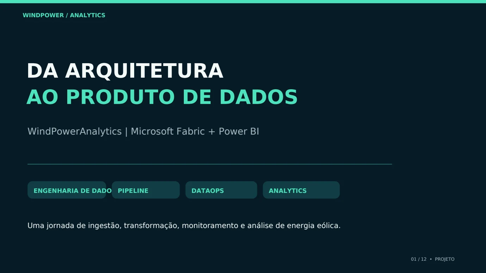
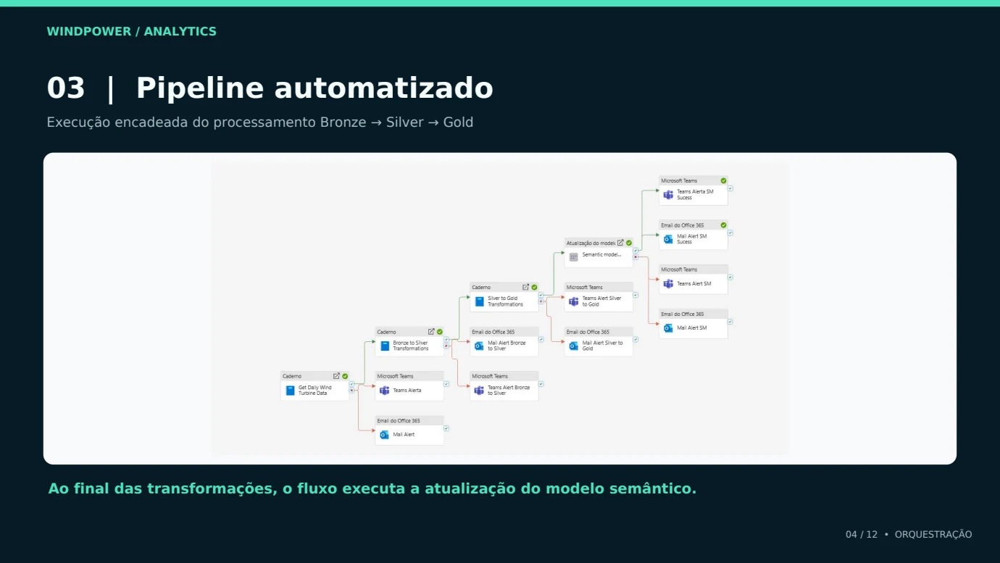
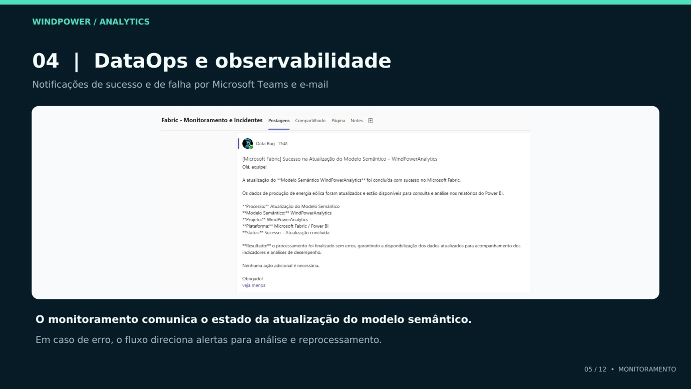
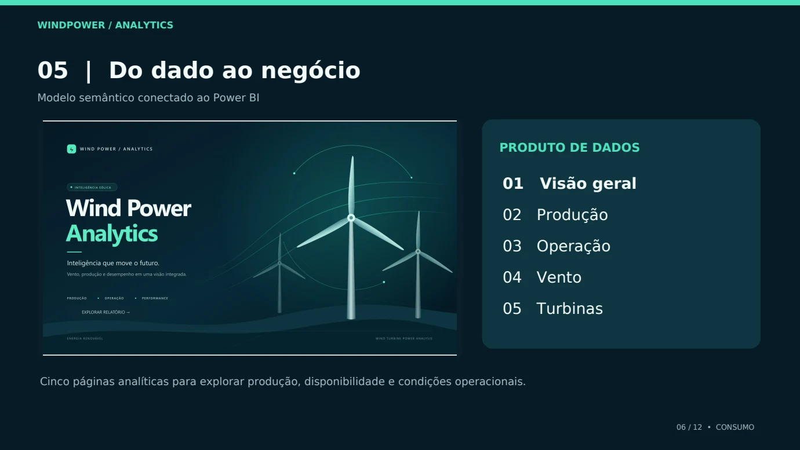
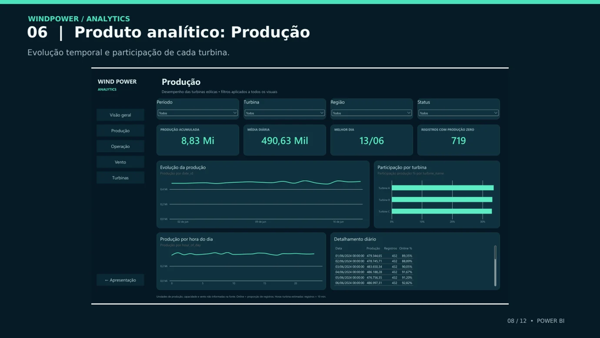
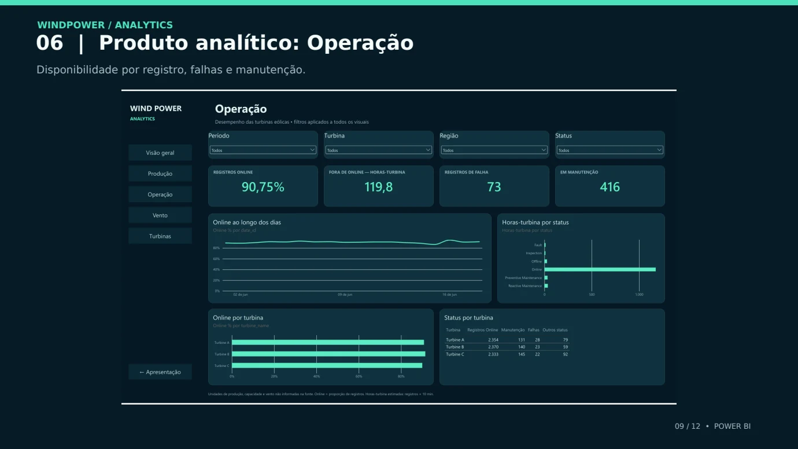
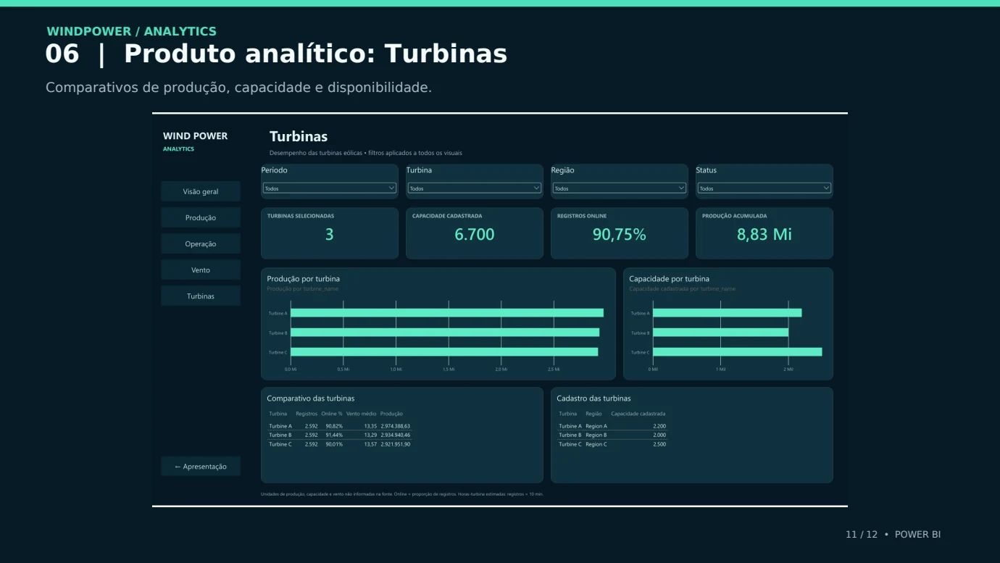

Visão do problema e arquitetura
Objetivo: integrar indicadores de geração eólica, vento e disponibilidade operacional. O desenho mostra a origem dos dados, o OneLake e o caminho de transformação até o Power BI.
Uma solução de Engenharia de Dados de ponta a ponta para acompanhar a produção de energia eólica, integrando ingestão, arquitetura Medallion, transformações em PySpark, modelagem dimensional, orquestração e um produto analítico em Power BI.
Assista à sequência apresentada no material técnico: origem dos dados, arquitetura Microsoft Fabric, camadas Bronze, Silver e Gold, pipeline e alertas, modelo semântico e, ao final, cada uma das cinco páginas do dashboard Power BI.

WindPowerAnalytics_Historia_Completa.gif na pasta assets/images/windpoweranalytics/ deste repositório.Arquitetura construída no Microsoft Fabric com Lakehouses separados por camada. O fluxo organiza os registros de turbinas eólicas desde a captura até a disponibilização dos dados para análise.
fact_wind_power centraliza os registros da produção e se relaciona às dimensões dim_date, dim_time, dim_turbine e dim_operational_status. As dimensões oferecem contexto temporal, características das turbinas e status operacionais.
O fluxo operacional reúne a coleta diária Get Daily Wind Turbine Data, o processamento das camadas do Lakehouse e a atualização do modelo semântico. O monitoramento identifica falhas e sucessos para apoiar a operação.
Coleta e carga de novos dados de turbinas para a camada de entrada, com acompanhamento do processamento no Fabric.
Aplicação de regras de limpeza, geração de atributos temporais e preparação do modelo Gold em tabelas Delta.
Disponibilização e atualização dos dados analíticos utilizados pelo Power BI, com atenção a mudanças de schema.
Monitoramento de execuções no Fabric e comunicação de sucesso ou falha por notificações no Teams e e-mail.
Durante a implementação, a solução também exigiu tratamento de evolução do schema Delta, alinhamento entre dimensões e modelo semântico e observação de limites de capacidade Spark. Esses pontos fazem parte da experiência prática de operação da plataforma.
O relatório final integra cinco perspectivas: Visão geral, Produção, Operação, Vento e Turbinas. Os painéis permitem comparar produção acumulada, registros online, condições do vento e desempenho das turbinas monitoradas.
Exemplo de evolução diária da produção, apresentado de forma ilustrativa para demonstrar o conceito visual do dashboard.
Evolução diária e horária, participação por turbina, média diária e registros sem produção.
Percentual de registros online, registros de falha, manutenção e distribuição do tempo por status.
Velocidade média, valores mínimo e máximo, direção predominante e relação entre vento e produção.
Comparação entre turbinas, capacidade cadastrada, produção e disponibilidade observada.
Uma leitura em sequência, do desenho da solução até o relatório entregue. A apresentação completa do WindPowerAnalytics foi organizada como um carrossel de 12 páginas para o LinkedIn.
Objetivo: integrar indicadores de geração eólica, vento e disponibilidade operacional. O desenho mostra a origem dos dados, o OneLake e o caminho de transformação até o Power BI.
Recebimento dos dados CSV/web no Lakehouse Bronze. Esta camada preserva os registros de origem e serve como ponto de partida para o processamento.
Notebooks PySpark estruturam e padronizam informações temporais, de produção, status de operação e características das turbinas.
Publicação das cinco tabelas Delta: dim_date, dim_time, dim_turbine, dim_operational_status e fact_wind_power. A modelagem organiza as métricas para consumo pelo modelo semântico.
O processo Get Daily Wind Turbine Data automatiza a ingestão e participa do fluxo de atualização. Os notebooks e a atualização do modelo semântico compõem a esteira analítica.
O Monitoring Hub permite acompanhar as execuções, enquanto alertas no Teams e e-mail comunicam os resultados do processamento e da atualização do modelo semântico.
O relatório reúne Visão Geral, Produção, Operação, Vento e Turbinas, transformando a base Gold em acompanhamento operacional e análise de desempenho.
Visualize o passo a passo real da solução, da arquitetura à entrega dos relatórios. Cada imagem corresponde a uma página do documento preparado para LinkedIn. O pacote de imagens e o PDF devem ser enviados à pasta de assets do GitHub para aparecerem publicamente.
PDF para download: o arquivo estará disponível aqui após o envio dos assets ao repositório.

Imagem pendente de publicação no repositório.')">


Imagem pendente de publicação no repositório.')">
Imagem pendente de publicação no repositório.')">
Imagem pendente de publicação no repositório.')">

Imagem pendente de publicação no repositório.')">
Imagem pendente de publicação no repositório.')">

Imagem pendente de publicação no repositório.')">
A apresentação reúne a história da arquitetura, os passos do pipeline, o monitoramento e as telas do produto analítico. O arquivo PDF está preparado; sua publicação como download direto neste site depende de adicionar o arquivo WindPowerAnalytics_Jornada_Fabric_LinkedIn.pdf ao diretório assets/docs/ do repositório.
Enquanto isso, explore o estudo de caso completo nesta página e o resumo do dashboard logo acima.
Revisar a arquitetura ↗Apresentação do Wind Power Analytics e da visão integrada de produção, operação e performance.
Produção acumulada de 8,83 Mi, 90,75% de registros online, vento médio de 13,40 e três turbinas monitoradas no recorte apresentado.
Análises por dia, hora e turbina; média diária, melhor dia e registros com produção zero.
Participação dos estados operacionais, registros de falhas e manutenção por turbina.
Velocidade e direção do vento, faixas de velocidade e relação com a produção.
Capacidade cadastrada, produção acumulada e indicadores operacionais comparativos.
O WindPowerAnalytics demonstra a conexão entre engenharia, automação, modelagem e experiência analítica. A entrega não termina na criação de tabelas: inclui preparação do modelo semântico, monitoramento de falhas e visualização orientada às perguntas do negócio.